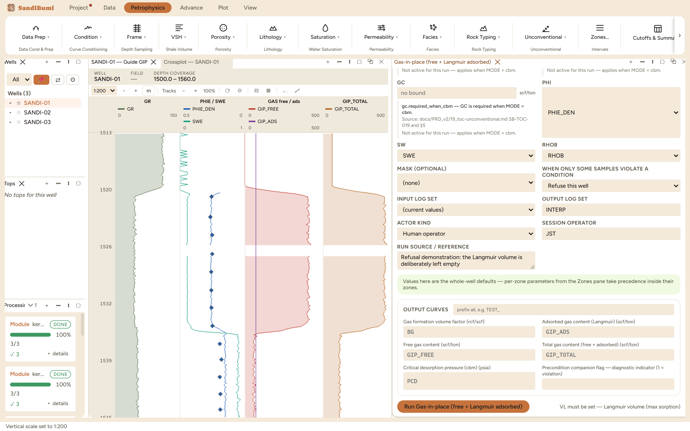
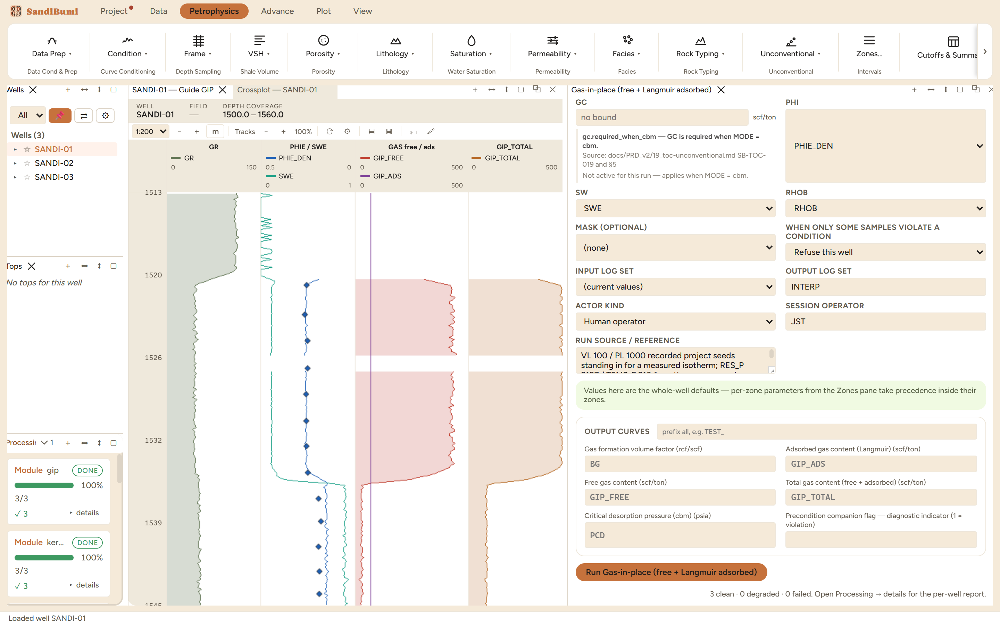

Per-sample gas-in-place as gas content, standard cubic feet per ton of rock, split into free gas in the pore space and gas adsorbed on organic matter, so the total composites like any other curve. Reach for it in shale gas or coalbed work where adsorbed gas is a material share of the resource; in conventional reservoir the adsorbed term is noise and ordinary volumetrics serve better.
Bg = 0.02827 · z · T / P (T in Rankine; rcf/scf) GIP_FREE = 32.0368 · φ · (1 − Sw) / (RHOB · Bg) GIP_ADS = VL · P / (PL + P) (Langmuir 1918) GIP_TOTAL = GIP_FREE + GIP_ADS
Free gas is pore volume times gas saturation, converted from reservoir to surface volume through Bg and normalized per ton through bulk density. The adsorbed term is the Langmuir isotherm: VL is the plateau, the most the rock can hold, and PL the pressure at half of it. CBM mode adds the dry-ash-free correction and, given a measured gas content, the critical desorption pressure (Ambrose et al. 2010; GRI, Mavor-Nelson 1996).
Langmuir constants come from a laboratory isotherm measured on this rock, so they ship absent, and a run without one stops:
VL must be set — Langmuir volume (max sorption)

3 clean. The arithmetic is checkable by hand and checks out: Bg stores 0.007791 rcf/scf, exactly 0.02827 · 0.9 · 669.67 / 2187, and GIP_ADS stores 68.62 scf/ton at every sample, exactly 100 · 2187 / 3187. The adsorbed curve is flat because every input to it is a constant here; on a real study the pressure trend and a TOC-scaled VL give it structure. Free gas does vary: median 121, maximum 454 scf/ton across the 573 samples carrying porosity and saturation, peaking in the gas sand, and GIP_TOTAL tops out at 523 scf/ton. PCD stays entirely MISSING, correctly, since it is a CBM-mode output and this run is shale mode.
The variant is the isotherm's linearity on display: VL 200 doubles GIP_ADS to 137.25 scf/ton at every sample, exactly ×2, with free gas untouched. An uncertain Langmuir volume passes straight through to the adsorbed resource, which is why it must be measured. Restoring VL 100 reproduces 68.62.
